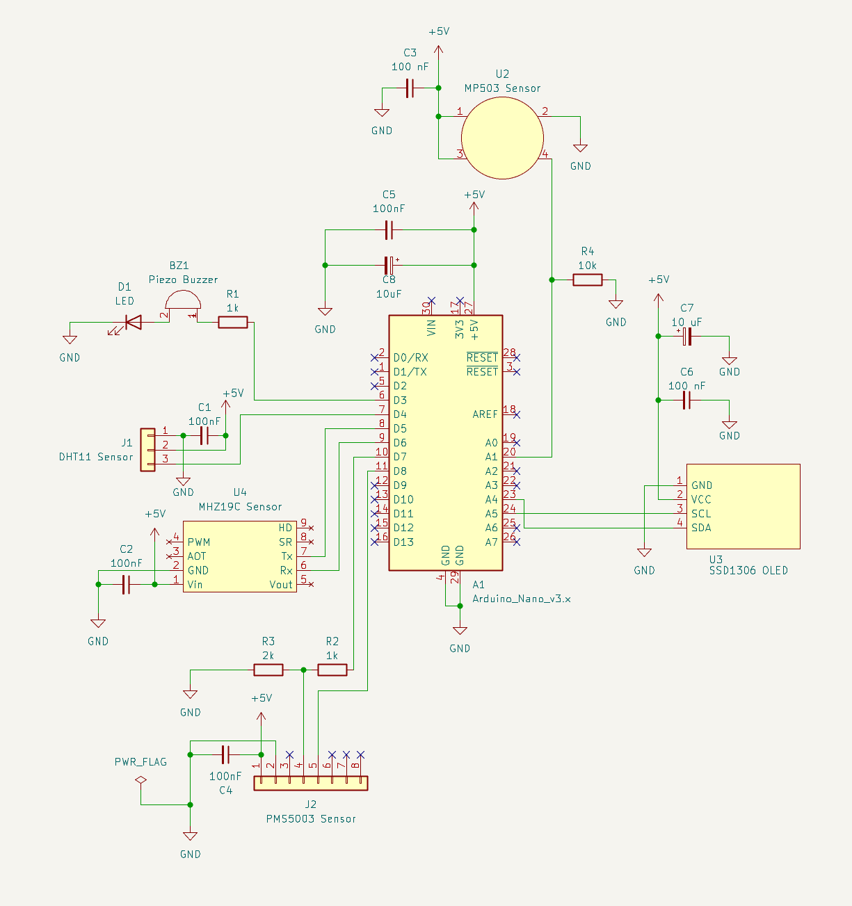
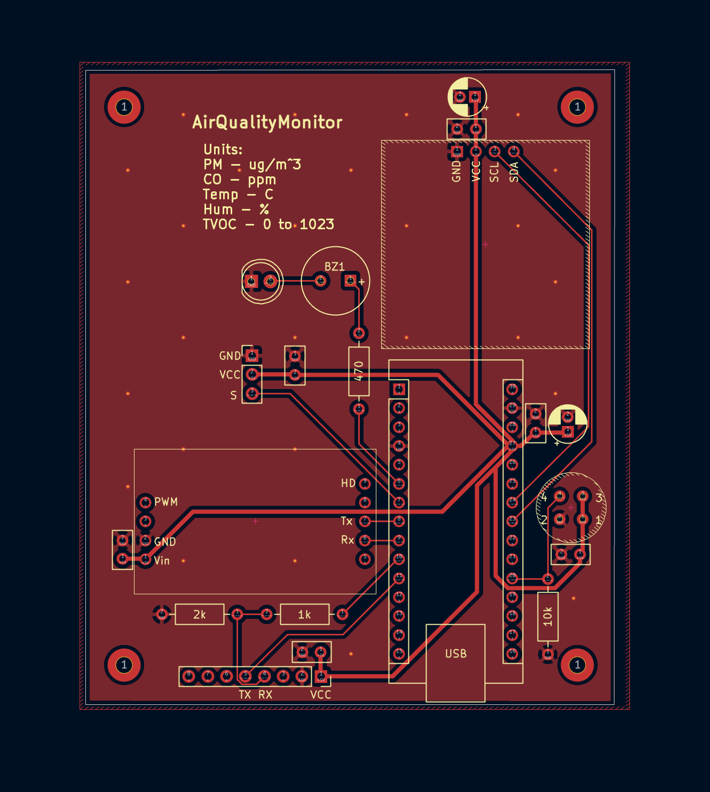
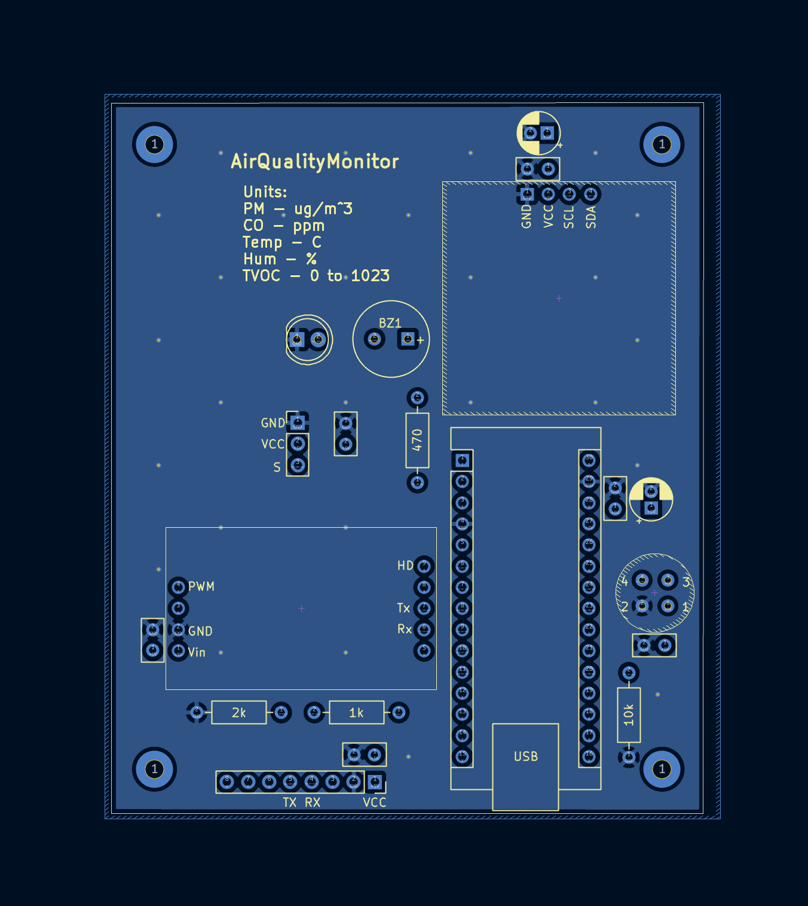
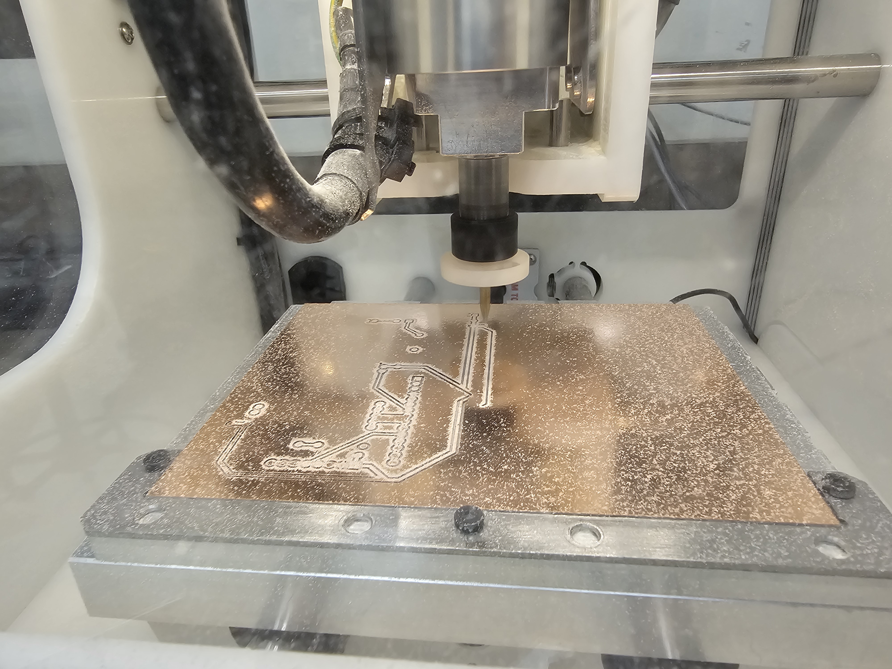
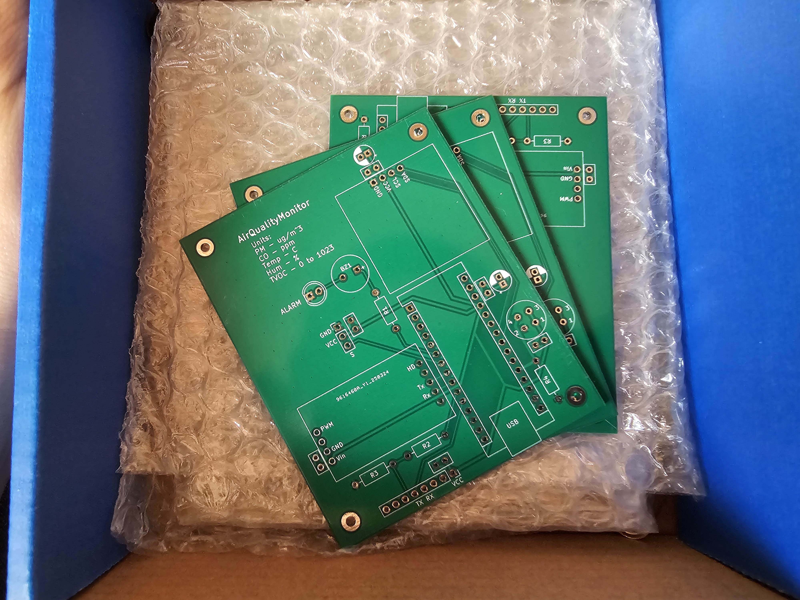
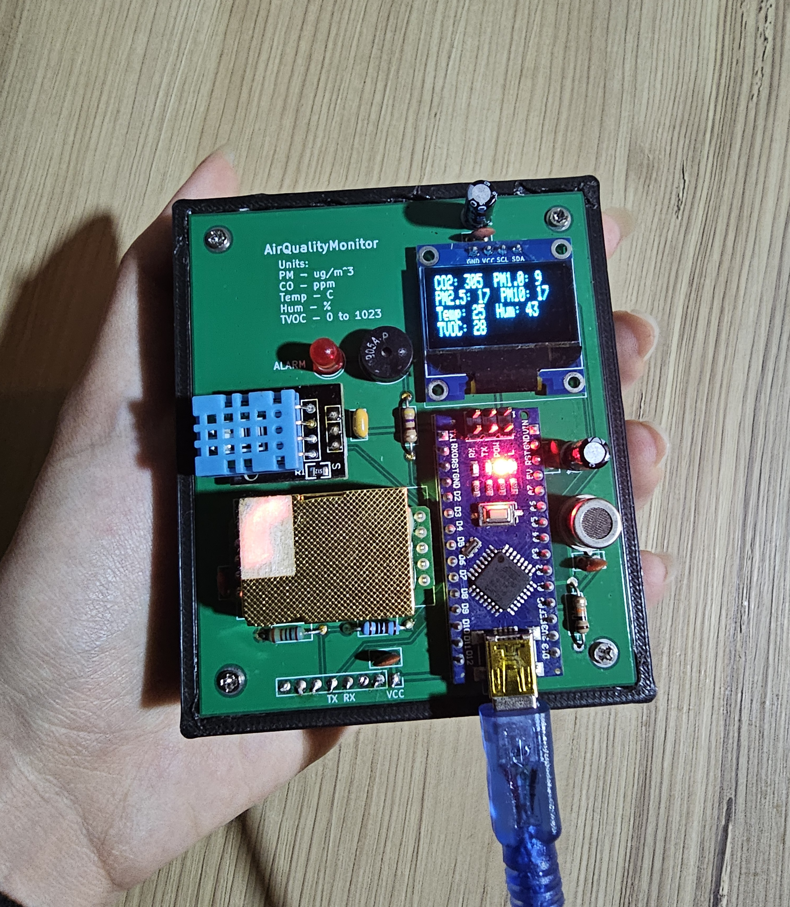

Project Overview:
The main goal of this project was to design and build a relatively small and cost-effective device that can be used to monitor air quality. More specifically, the device reads temperature and humidity, as well as common indoor pollutants including CO2, particulate matter (PM1.0, PM2.5, and PM10), and total volatile organic compounds (TVOCs). Additionally, the LED periodically blinks and the buzzer goes off when the measured air quality is "unhealthy." The cutoff values to trigger this alarm function were determined somewhat arbitrarily in the code based on the World Health Organization's recommended levels.
The main design considerations were as follows:
- Cost-effective design: The prices of home air quality monitors can often go well above $100. This is especially true if the device is good quality, and if it is measuring a lot of parameters. This project aims to design a device that is still good quality, and measures as many important parameters as possible while staying in the $50-60 range.
- Small size:The device should ideally be compact enough to be easily carried around by hand. This would allow users to take measurements wherever they want. The device can be powered easily using a phone or a power bank.
- Usability:The device was designed to ensure that even someone with little to no knowledge of any electronics can utilize it. All that is necessary for the device to function is power, which is provided to the board by plugging a cable into the USB port located on the Arduino. After the device is powered up, it boots up automatically and starts displaying sensor readings on the OLED screen on board. If the user has some knowledge of electronics, they can also easily modify the code, or write their own code and flash it onto the microcontroller board using Arduino IDE or another platform (by connecting their computer to the microcontroller board through the same USB port used to power the device).
The sensors and various other parts used for this project are listed below, along with the datasheets if applicable:
| Part Name | Description | Datasheet |
| MH-Z19C | CO2 sensor | link |
| PMS5003 | Particle concentration sensor | link |
| DHT11 | Temperature & humidity sensor | link |
| MP503 | TVOC sensor (total volatile organic compounds) | link |
| SSD1306 | OLED display | - |
| Arduino Nano | Microcontroller board | link |
| x1 470Ω Resistor | Used to limit current through the buzzer & LED | N/A |
| x1 1kΩ Resistor | Used for level shifting | N/A |
| x1 2kΩ Resistor | Used for level shifting | N/A |
| x1 10kΩ Resistor | For reading from MP503 | N/A |
| x1 5mm Red LED | Alarm | N/A |
| Piezoelectric Buzzer | Alarm | - |
| x2 10uF electrolytic capacitors | Decoupling - stabilizing power | N/A |
| x6 0.1 uF (100nF) ceramic capacitors | Bypass - slow down ripple in readings | N/A |
Project Schematic:
The sensors, the screen, and the microcontroller are connected as described by the schematic below:

Important Notes:
- The SSD1306 OLED screen module used for this project does have internal pull-up resistors included, so additional resistors are not needed for the I2C (SCL/SDA) communication lines. The module is also 3.3 and 5 V compatible, so logic shifters are not needed.
- The buzzer used for this project is the GT-0905A-P. It is a piezoelectric buzzer, not magnetic, so it does not need a snubber diode connected in reverse across the buzzer to clamp the voltage spike generated when the buzzer is switched off to protect the GPIO pin it is connected to.
- The MHZ19C sensor operates on a 3.3V logic level, but is compatible with 5V as well. The device needs to be powered with 5V. Outputs UART signals.
- Similarly, the PMS5003 sensor needs to be powered with 5V and uses UART. However, the serial ports are not compatible with 5V (TTL level 3.3V). Therefore, a logic shifter is needed to send signals from the Arduino Nano to the sensor RX pin (R1 = 1k Ω, R2 = 2k Ω).
- The DHT11 sensor is digital.
- The MP503 sensor is analog. The Arduino Nano has a 10-bit analog to digital converter (ADC), which maps the input voltage between 0 and 5V into integer values from 0 to 1023. To figure out the exact concentration of gases from this output value, refer to the graphs on the datasheet.
Breadboarding:
The circuit was first prototyped using a breadboard after testing each sensor individually. This is also the stage where I figured out how to program the microcontroller so that it would read sensor data, and display the measured values on the OLED screen.

The Arduino IDE was used for programming. The code can be downloaded HERE.
Front Copper Layer (with Silkscreen):
This is the front copper layer of the PCB designed to keep all the sensors, the screen, and the microcontroller board together.

Back Copper Layer (with Silkscreen):
This is the back copper layer of the PCB. This is a ground plane with no signal traces. Several ground-stitching vias are scattered around the PCB to connect the ground plane to the ground space between the signal traces on the top layer to make sure the all ground spaces are unified.
It is also important to note that for this project, this layer is not necessary. This project could have easily utilized just a single-sided PCB. However, the manufacturing cost of a single-sided vs double-sided PCB was the same, so I decided to go for a double-sided/2 layer PCB.

Extra:
While the PCB for this project was ordered online, I later got trained on how to use the CNC milling machine that is located at one of the ECE makerspaces at NC State University.

Aseembling The PCB:
The PCB for this project was ordered through JLCPCB. Below is how the board looked like before assembly and after I finished soldering all the components. A case to hold everything together was also designed using Autodesk Fusion. The case was printed at the library.

